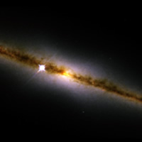

The thin disk is the defining component of disk galaxies in general and spiral galaxies in particular. It contains stars, star clusters, gas and dust which are confined to the galaxy’s plane of rotation. Due to its close proximity (we are actually located within it), we have much more information on the disk of the Milky Way than other spiral galaxies, but the disk of the Milky Way is considered typical.
Thin disks contain the majority of the baryonic material in spiral galaxies (on the order of 80% of the baryonic material in the Milky Way is located in the thin disk). With a scale height of about 400 light years and scale length of about 10,000 light years, the disk of the Milky Way rotates about Galactic centre at about 220 km/sec. In addition, its outer regions appear to be warped, a phenomenon that occurs in about 50% of spiral galaxies. Although the origin of warps is uncertain, it is thought that they are probably the result of galaxy interactions.

Credit: NASA, The NICMOS Group (STScI, ESA) and The NICMOS Science Team (Univ. of Arizona).
The thin disks of spiral galaxies contain a lot of gas and dust, and are therefore an active site for ongoing star formation, especially in the spiral arms. For this reason, stars in the thin disk tend to be relatively young (average age around 6 billion years), although individual ages range from 0 to 10 billion years. This is evidence for secular evolution in thin disks. Thin disk stars also tend to be metal-rich compared to thick disk and halo stars, and typically have similar metallicities to the Sun (also a thin disk star).